ConvexLARS
A demonstration of applying functions convexLAR, convexLASSO, graphLAR, graphLASSO, groupLAR and groupLASSO to calculate LAR and LASSO solution paths for various models, including generalized linear model, recurrent event data, panel count data and Ada-boost. Weighted LARS and group LARS are also considered.
1.convexLAR: Calculate the ConvexLAR (weighted ConvexLAR) solution path of general convex function, including "generalized linear model" (glm), "recurrent event data" (recurrent), "panel count data" (panel) and "Ada-boost" (ada).
2.convexLASSO: Calculate the ConvexLASSO (weighted ConvexLASSO) solution path of general convex function, including "generalized linear model" (glm), "recurrent event data" (recurrent), "panel count data" (panel) and "Ada-boost" (ada).
3.convexGLAR: Calculate the group LAR solution path of general convex function, including "generalized linear model" (glm), "recurrent event data" (recurrent), "panel count data" (panel) and "Ada-boost" (ada).
4.convexGLASSO: Calculate the group LASSO solution path of general convex function, including "generalized linear model" (glm), "recurrent event data" (recurrent), "panel count data" (panel) and "Ada-boost" (ada).
5.graphLAR: Calculate the ConvexLAR solution path of "gaussian graphical model".
6.graphLASSO: Calculate the ConvexLASSO solution path of "gaussian graphical model".
Contents
- Least square case (a simulated data set)
- Poisson model (the diabetes data set)
- Recurrent event data
- Panel count data (Bladder data set, Sun and Wei, 2000)
- Gaussian graphical model (math score data) (Mardia et. al., 1979)
- Gaussian graphical model (simulated data set)
- Ada-boost (WDBC data) (Frank and Asuncion, 2010)
Least square case (a simulated data set)
clear; % read matrices x, y from a simulated data set (n=100, p=6) x=dlmread('./data/lscase_x.dat'); y=dlmread('./data/lscase_y.dat'); model='glm'; % specify model distname='normal'; % specify distribution weight=ones(size(x,2),1); % specify weight % LAR solution path [TP_LAR_normal, FP_LAR_normal]=convexLAR(x, y, model, distname, weight); % LASSO solution path [TP_LASSO_normal, FP_LASSO_normal]=convexLASSO(x, y, model, distname, weight); % plot solution paths plot_path(TP_LAR_normal, FP_LAR_normal, ... 'ConvexLAR solution path for least square example'); plot_path(TP_LASSO_normal, FP_LASSO_normal, ... 'ConvexLASSO solution path for least square example');
plotcol = rbgcm plotcol = rbgcm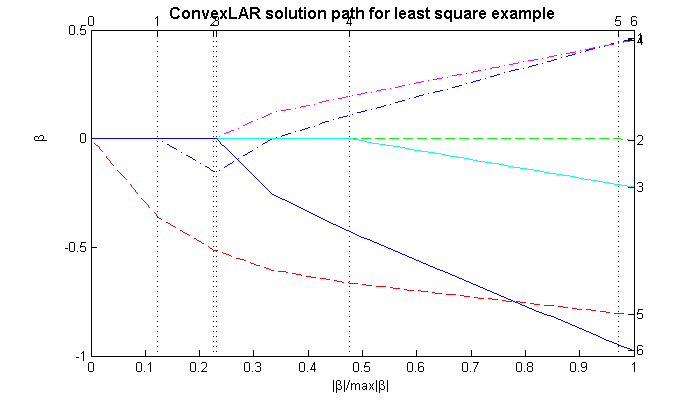 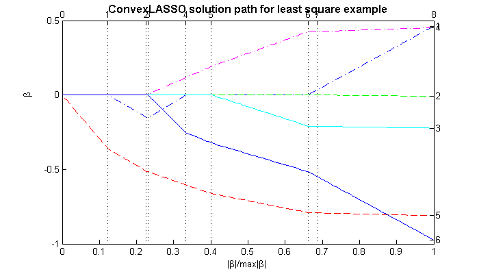
Poisson model (the diabetes data set)
clear; % read matrices x, y from the diabetes data set x=dlmread('./data/diabetesx.dat'); y=dlmread('./data/diabetesy.dat'); % Calculate LARS solution path model='glm'; % specify model distname='poisson'; % specify distribution weight=ones(size(x,2),1); % specify weight % LAR solution path [TP_LAR_pois, FP_LAR_pois]=convexLAR(x, y, model, distname, weight); % LASSO solution path [TP_LASSO_pois, FP_LASSO_pois]=convexLASSO(x, y, model, distname, weight); % plot solution paths plot_path(TP_LAR_pois, FP_LAR_pois, ... 'ConvexLAR solution path for possion model'); plot_path(TP_LASSO_pois, FP_LASSO_pois, ... 'ConvexLASSO solution path for possion model'); % Calculate weighted LARS solution path beta_ini=glmfit(x, y, distname, 'constant', 'on'); weight=abs(beta_ini(2:(size(x,2)+1))); % LAR solution path [TP_adaLAR_pois, FP_adaLAR_pois]=convexLAR(x, y, model, distname, weight); % LASSO solution path [TP_adaLASSO_pois, FP_adaLASSO_pois]=convexLASSO(x, y, model, distname, weight); % plot solution paths plot_path(TP_adaLAR_pois, FP_adaLAR_pois, ... 'Weighted ConvexLAR solution path for possion model'); plot_path(TP_adaLASSO_pois, FP_adaLASSO_pois, ... 'Weighted ConvexLASSO solution path for possion model');
plotcol = rbgcm plotcol = rbgcm plotcol = rbgcm plotcol = rbgcm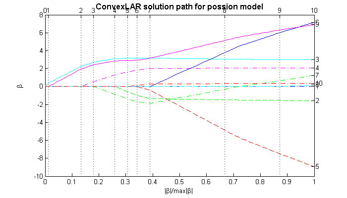 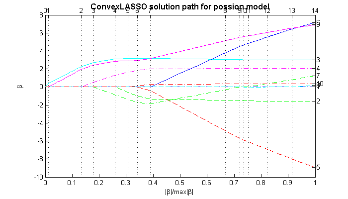 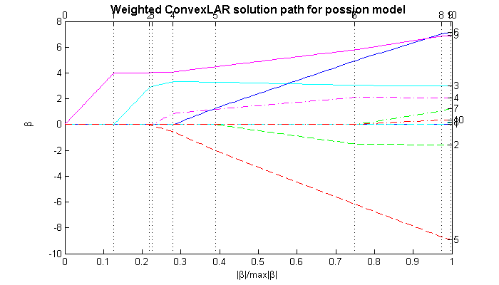 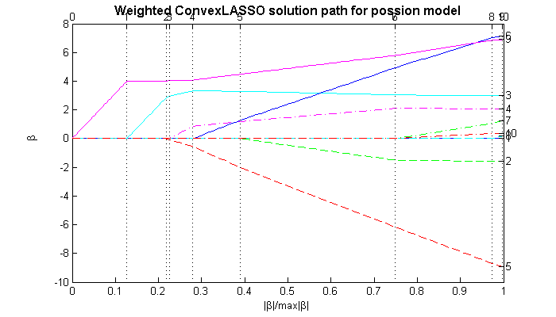
Recurrent event data
read matrices x, y from CGD date set with added interaction effect terms (Tong et al., 2009b)
x=dlmread('./data/cgd_x.dat'); y=dlmread('./data/cgd_y.dat'); x1=[x x(:,3).^2 x(:,4).^2 x(:,5).^2 x(:,3).*x(:,4) x(:,3).*x(:,5) x(:,4).*x(:,5)]; % Calculate ConvexLARS solution paths model='recurrent'; % specify model distname=''; weight=ones(size(x1,2),1); % specify weight % LAR solution path [TP_LAR_cgd2, FP_LAR_cgd2]=convexLAR(x1, y, model, distname, weight); % LASSO solution path [TP_LASSO_cgd2, FP_LASSO_cgd2]=convexLASSO(x1, y, model, distname, weight); % plot solution paths plot_path(TP_LAR_cgd2, FP_LAR_cgd2, ... 'ConvexLAR solution path for recurrent event data'); plot_path(TP_LASSO_cgd2, FP_LASSO_cgd2, ... 'ConvexLASSO solution path for recurrent event data'); % Weighted ConvexLARS solution paths weight=abs(TP_LAR_cgd2(1:17,18)); % specify weight % LAR solution path [TP_adaLAR_cgd2, FP_adaLAR_cgd2]=convexLAR(x1, y, model, distname, weight); % LASSO solution path [TP_adaLASSO_cgd2, FP_adaLASSO_cgd2]=convexLASSO(x1, y, model, distname, weight); % plot solution paths plot_path(TP_adaLAR_cgd2, FP_LAR_cgd2, ... 'Weighted ConvexLAR solution path for recurrent event data'); plot_path(TP_adaLASSO_cgd2, FP_LASSO_cgd2, ... 'Weighted ConvexLASSO solution path for recurrent event data');
plotcol = rbgcm plotcol = rbgcm plotcol = rbgcm plotcol = rbgcm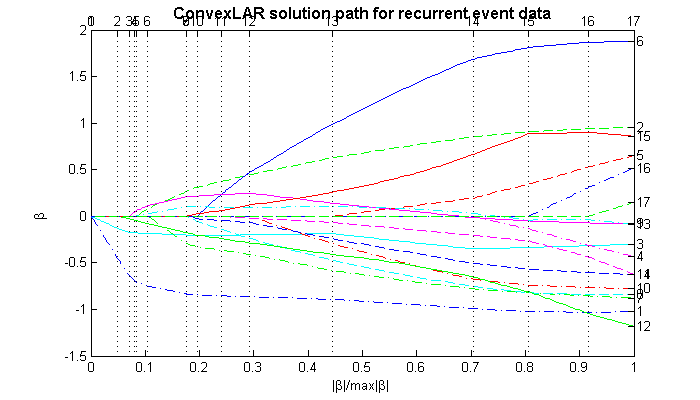 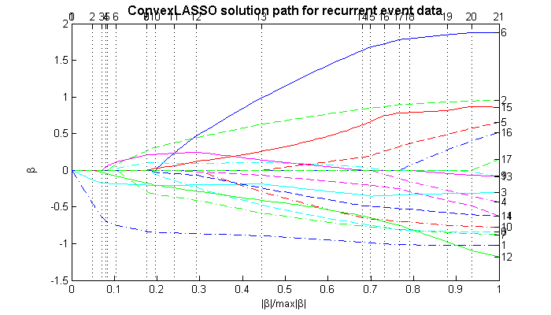 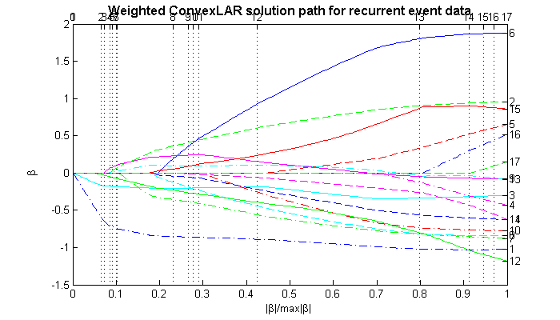 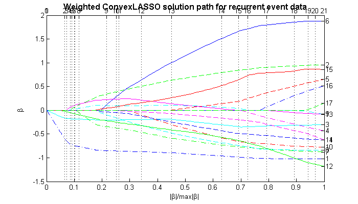
Panel count data (Bladder data set, Sun and Wei, 2000)
clear; x=dlmread('./data/bladder_x.dat'); y=dlmread('./data/bladder_y.dat'); model='panel'; % specify model distname=''; weight=ones(size(x,2),1); % specify weight % calculate LAR solution path [TP_LAR_bladder, FP_LAR_bladder]=convexLAR(x, y, model, distname, weight); % calculate LASSO solution path [TP_LASSO_bladder, FP_LASSO_bladder]=convexLASSO(x, y, model, distname, weight); % plot solution paths plot_path(TP_LAR_bladder, FP_LAR_bladder, ... 'LAR solution path for panel count data'); plot_path(TP_LASSO_bladder, FP_LASSO_bladder, ... 'LASSO solution path for panel count data');
plotcol = rbgcm plotcol = rbgcm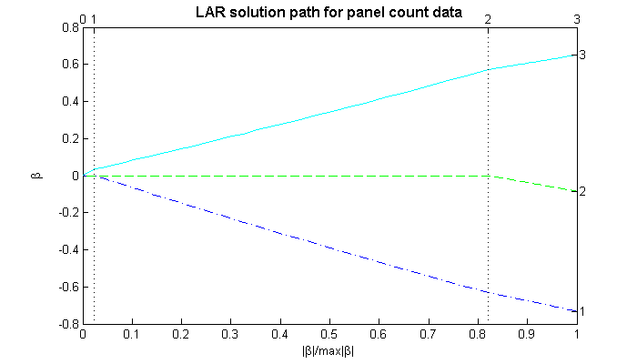 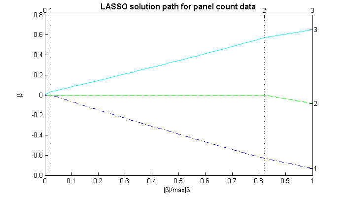
Gaussian graphical model (math score data) (Mardia et. al., 1979)
clear; x=dlmread('./data/scoreGraph_x.dat'); % calculate LAR solution path [TP_LAR_math, FP_LAR_math]=graphLAR(x); % calculate LASSO solution path [TP_LASSO_math, FP_LASSO_math]=graphLASSO(x); % plot solution paths plot_path(TP_LAR_math, FP_LAR_math, ... 'LAR solution path for graphical model'); plot_path(TP_LASSO_math, FP_LASSO_math, ... 'LASSO solution path for graphical model');
plotcol = rbgcm plotcol = rbgcm
 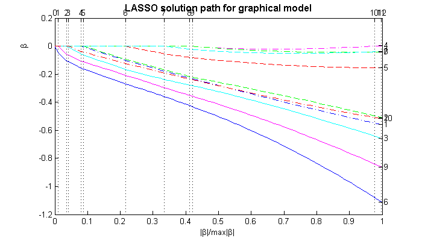
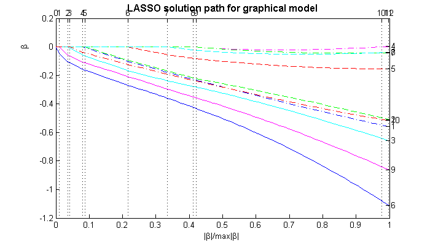 Gaussian graphical model (simulated data set)
clear; x=dlmread('./data/graphModel_x.dat'); % calculate LAR solution path [TP_LAR_graph, FP_LAR_graph]=graphLAR(x); % calculate LASSO solution path [TP_LASSO_graph, FP_LASSO_graph]=graphLASSO(x); % plot solution paths plot_path(TP_LAR_graph, FP_LAR_graph, ... 'LAR solution path for graphical model'); plot_path(TP_LASSO_graph, FP_LASSO_graph, ... 'LASSO solution path for graphical model');
plotcol = rbgcm plotcol = rbgcm
 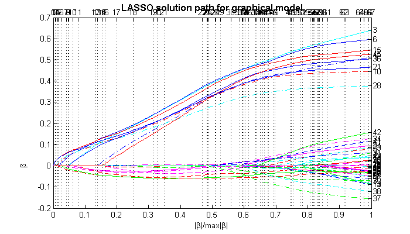
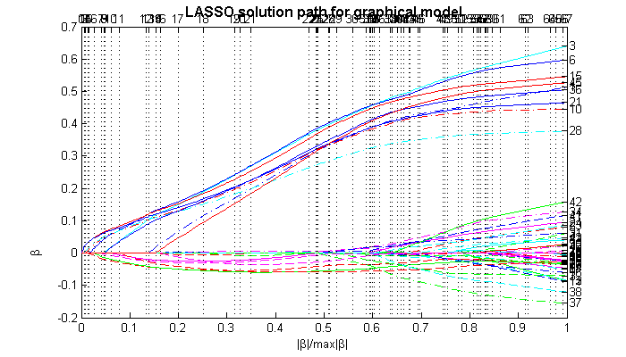 Ada-boost (WDBC data) (Frank and Asuncion, 2010)
This data set has the singularity issue
clear; % read matrics x, y from the WDBC data set x=dlmread('./data/wdbc.data', ',', 0, 2); x=(x-repmat(mean(x, 1), size(x,1),1))./repmat(std(x, 1), size(x, 1), 1); [temp1, tmp2]=textread('./data/wdbc.data', '%f%s%*[^\n]', 'delimiter', ','); y=zeros(length(tmp2),1); for i=1:length(tmp2) if(strcmp(tmp2(i), 'M')) y(i)=1; elseif(strcmp(tmp2(i),'B')) y(i)=0; else y(i)=-100; end end y1=y*2-1; index=repmat(1:10, 1, 3)'; % index set to classify covariates into 10 groups. Members of the same group share the same numbers. model='ada'; % specify model distname=''; % specify distribution % Calculate GroupConvexLAR-L2 solution path method='grouplarl2'; % specify method [TP_GLARL2_wdbc, FP_GLARL2_wdbc]=convexGLAR(x, y1, model, distname, index, method); [r,c]=find(isnan(TP_GLARL2_wdbc)); TP_GLARL2_wdbc(:,c)=[]; p=(size(TP_GLARL2_wdbc,1)-1)/2; FP_GLARL2_wdbc=FP_GLARL2_wdbc(:,FP_GLARL2_wdbc(p+1,:)<TP_GLARL2_wdbc(p+1,end)); % plot solution paths plot_path(TP_GLARL2_wdbc, FP_GLARL2_wdbc, ... 'GroupLARL2 solution path for WDBC data'); % Calculate GroupConvexLAR-L1 solution path method='grouplarl1'; % specify method [TP_GLARL1_wdbc, FP_GLARL1_wdbc]=convexGLAR(x, y1, model, distname, index, method); [r,c]=find(isnan(TP_GLARL1_wdbc)); TP_GLARL1_wdbc(:,c)=[]; p=(size(TP_GLARL1_wdbc,1)-1)/2; FP_GLARL1_wdbc=FP_GLARL1_wdbc(:,FP_GLARL1_wdbc(p+1,:)<=TP_GLARL1_wdbc(p+1,end)); % plot solution paths plot_path(TP_GLARL1_wdbc, FP_GLARL1_wdbc, ... 'GroupLARL1 solution path for WDBC data'); % Calculate GroupConvexLAR solution path method='grouplar'; % specify method % calculate GroupLAR solution path [TP_GLAR_wdbc, FP_GLAR_wdbc]=convexGLAR(x, y1, model, distname, index, method); [r,c]=find(isnan(TP_GLAR_wdbc)); TP_GLAR_wdbc(:,c)=[]; p=(size(TP_GLAR_wdbc,1)-1)/2; FP_GLAR_wdbc=FP_GLAR_wdbc(:,FP_GLAR_wdbc(p+1,:)<=TP_GLAR_wdbc(p+1,end)); % plot solution paths plot_path(TP_GLAR_wdbc, FP_GLAR_wdbc, ... 'GroupLAR solution path for WDBC data'); % Calculate GroupConvexLASSO solution path method='grouplar'; % specify method % calculate GroupLASSO solution path [TP_GLASSO_wdbc, FP_GLASSO_wdbc]=convexGLASSO(x, y1, model, distname, index, method); [r,c]=find(isnan(TP_GLASSO_wdbc)); TP_GLASSO_wdbc(:,c)=[]; p=(size(TP_GLASSO_wdbc,1)-1)/2; FP_GLASSO_wdbc=FP_GLASSO_wdbc(:,FP_GLASSO_wdbc(p+1,:)<=TP_GLASSO_wdbc(p+1,end)); % plot solution paths plot_path(TP_GLASSO_wdbc, FP_GLASSO_wdbc, ... 'GroupLASSO solution path for WDBC data');
Warning: Matrix is singular, close to singular or badly scaled. Results may be inaccurate. RCOND = NaN. Warning: Matrix is singular, close to singular or badly scaled. Results may be inaccurate. RCOND = NaN. Warning: Matrix is singular, close to singular or badly scaled. Results may be inaccurate. RCOND = NaN. Warning: Matrix is singular, close to singular or badly scaled. Results may be inaccurate. RCOND = NaN. Warning: Matrix is singular, close to singular or badly scaled. Results may be inaccurate. RCOND = NaN. Warning: Matrix is singular, close to singular or badly scaled. Results may be inaccurate. RCOND = NaN. Warning: Matrix is singular, close to singular or badly scaled. Results may be inaccurate. RCOND = NaN. Warning: Matrix is singular, close to singular or badly scaled. Results may be inaccurate. RCOND = NaN. Warning: Matrix is singular, close to singular or badly scaled. Results may be inaccurate. RCOND = NaN. Warning: Matrix is singular, close to singular or badly scaled. Results may be inaccurate. RCOND = NaN. Warning: Matrix is singular, close to singular or badly scaled. Results may be inaccurate. RCOND = NaN. Warning: Matrix is singular, close to singular or badly scaled. Results may be inaccurate. RCOND = NaN. Warning: Matrix is singular, close to singular or badly scaled. Results may be inaccurate. RCOND = NaN. Warning: Matrix is singular, close to singular or badly scaled. Results may be inaccurate. RCOND = NaN. Warning: Matrix is singular, close to singular or badly scaled. Results may be inaccurate. RCOND = NaN. Warning: Matrix is singular, close to singular or badly scaled. Results may be inaccurate. RCOND = NaN. Warning: Matrix is singular, close to singular or badly scaled. Results may be inaccurate. RCOND = NaN. Warning: Matrix is singular, close to singular or badly scaled. Results may be inaccurate. RCOND = NaN. Warning: Matrix is singular, close to singular or badly scaled. Results may be inaccurate. RCOND = NaN. Warning: Matrix is singular, close to singular or badly scaled. Results may be inaccurate. RCOND = NaN. Warning: Matrix is singular, close to singular or badly scaled. Results may be inaccurate. RCOND = NaN. Warning: Matrix is singular, close to singular or badly scaled. Results may be inaccurate. RCOND = NaN. plotcol = rbgcm Warning: Matrix is singular, close to singular or badly scaled. Results may be inaccurate. RCOND = NaN. Warning: Matrix is singular, close to singular or badly scaled. Results may be inaccurate. RCOND = NaN. Warning: Matrix is singular, close to singular or badly scaled. Results may be inaccurate. RCOND = NaN. Warning: Matrix is singular, close to singular or badly scaled. Results may be inaccurate. RCOND = NaN. Warning: Matrix is singular, close to singular or badly scaled. Results may be inaccurate. RCOND = NaN. Warning: Matrix is singular, close to singular or badly scaled. Results may be inaccurate. RCOND = NaN. Warning: Matrix is singular, close to singular or badly scaled. Results may be inaccurate. RCOND = NaN. Warning: Matrix is singular, close to singular or badly scaled. Results may be inaccurate. RCOND = NaN. Warning: Matrix is singular, close to singular or badly scaled. Results may be inaccurate. RCOND = NaN. Warning: Matrix is singular, close to singular or badly scaled. Results may be inaccurate. RCOND = NaN. Warning: Matrix is singular, close to singular or badly scaled. Results may be inaccurate. RCOND = NaN. Warning: Matrix is singular, close to singular or badly scaled. Results may be inaccurate. RCOND = NaN. Warning: Matrix is singular, close to singular or badly scaled. Results may be inaccurate. RCOND = NaN. Warning: Matrix is singular, close to singular or badly scaled. Results may be inaccurate. RCOND = NaN. Warning: Matrix is singular, close to singular or badly scaled. Results may be inaccurate. RCOND = NaN. Warning: Matrix is singular, close to singular or badly scaled. Results may be inaccurate. RCOND = NaN. Warning: Matrix is singular, close to singular or badly scaled. Results may be inaccurate. RCOND = NaN. Warning: Matrix is singular, close to singular or badly scaled. Results may be inaccurate. RCOND = NaN. Warning: Matrix is singular, close to singular or badly scaled. Results may be inaccurate. RCOND = NaN. Warning: Matrix is singular, close to singular or badly scaled. Results may be inaccurate. RCOND = NaN. plotcol = rbgcm Warning: Matrix is singular, close to singular or badly scaled. Results may be inaccurate. RCOND = NaN. Warning: Matrix is singular, close to singular or badly scaled. Results may be inaccurate. RCOND = NaN. Warning: Matrix is singular, close to singular or badly scaled. Results may be inaccurate. RCOND = NaN. Warning: Matrix is singular, close to singular or badly scaled. Results may be inaccurate. RCOND = NaN. Warning: Matrix is singular, close to singular or badly scaled. Results may be inaccurate. RCOND = NaN. Warning: Matrix is singular, close to singular or badly scaled. Results may be inaccurate. RCOND = NaN. Warning: Matrix is singular, close to singular or badly scaled. Results may be inaccurate. RCOND = NaN. Warning: Matrix is singular, close to singular or badly scaled. Results may be inaccurate. RCOND = NaN. Warning: Matrix is singular, close to singular or badly scaled. Results may be inaccurate. RCOND = NaN. Warning: Matrix is singular, close to singular or badly scaled. Results may be inaccurate. RCOND = NaN. Warning: Matrix is singular, close to singular or badly scaled. Results may be inaccurate. RCOND = NaN. Warning: Matrix is singular, close to singular or badly scaled. Results may be inaccurate. RCOND = NaN. Warning: Matrix is singular, close to singular or badly scaled. Results may be inaccurate. RCOND = NaN. Warning: Matrix is singular, close to singular or badly scaled. Results may be inaccurate. RCOND = NaN. Warning: Matrix is singular, close to singular or badly scaled. Results may be inaccurate. RCOND = NaN. Warning: Matrix is singular, close to singular or badly scaled. Results may be inaccurate. RCOND = NaN. Warning: Matrix is singular, close to singular or badly scaled. Results may be inaccurate. RCOND = NaN. Warning: Matrix is singular, close to singular or badly scaled. Results may be inaccurate. RCOND = NaN. Warning: Matrix is singular, close to singular or badly scaled. Results may be inaccurate. RCOND = NaN. Warning: Matrix is singular, close to singular or badly scaled. Results may be inaccurate. RCOND = NaN. Warning: Matrix is singular, close to singular or badly scaled. Results may be inaccurate. RCOND = NaN. Warning: Matrix is singular, close to singular or badly scaled. Results may be inaccurate. RCOND = NaN. plotcol = rbgcm Warning: Matrix is singular, close to singular or badly scaled. Results may be inaccurate. RCOND = NaN. Warning: Matrix is singular, close to singular or badly scaled. Results may be inaccurate. RCOND = NaN. Warning: Matrix is singular, close to singular or badly scaled. Results may be inaccurate. RCOND = NaN. Warning: Matrix is singular, close to singular or badly scaled. Results may be inaccurate. RCOND = NaN. Warning: Matrix is singular, close to singular or badly scaled. Results may be inaccurate. RCOND = NaN. Warning: Matrix is singular, close to singular or badly scaled. Results may be inaccurate. RCOND = NaN. Warning: Matrix is singular, close to singular or badly scaled. Results may be inaccurate. RCOND = NaN. Warning: Matrix is singular, close to singular or badly scaled. Results may be inaccurate. RCOND = NaN. Warning: Matrix is singular, close to singular or badly scaled. Results may be inaccurate. RCOND = NaN. Warning: Matrix is singular, close to singular or badly scaled. Results may be inaccurate. RCOND = NaN. Warning: Matrix is singular, close to singular or badly scaled. Results may be inaccurate. RCOND = NaN. Warning: Matrix is singular, close to singular or badly scaled. Results may be inaccurate. RCOND = NaN. Warning: Matrix is singular, close to singular or badly scaled. Results may be inaccurate. RCOND = NaN. Warning: Matrix is singular, close to singular or badly scaled. Results may be inaccurate. RCOND = NaN. Warning: Matrix is singular, close to singular or badly scaled. Results may be inaccurate. RCOND = NaN. Warning: Matrix is singular, close to singular or badly scaled. Results may be inaccurate. RCOND = NaN. Warning: Matrix is singular, close to singular or badly scaled. Results may be inaccurate. RCOND = NaN. plotcol = rbgcm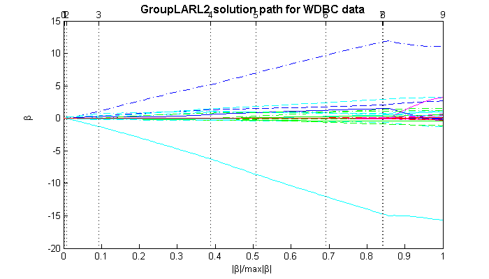 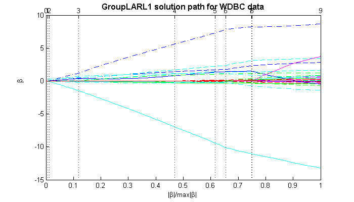 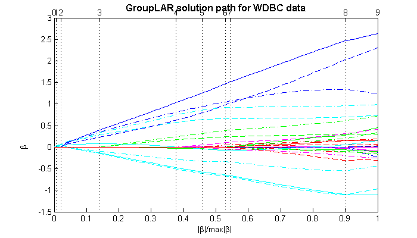 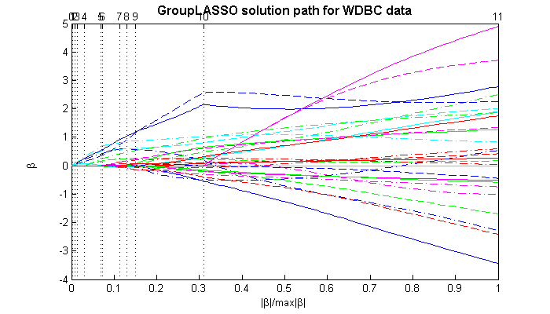